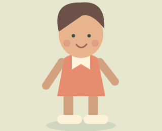
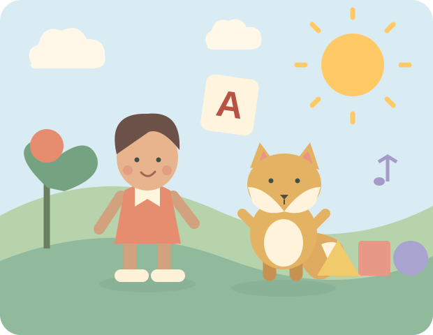
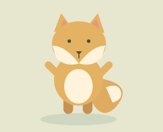

FICTIONAL REFERENCE / 01
Pip
Curious explorer. Coral outfit.
A familiar face for a new lesson.
A LITTLE SUNBEAMS KIDS PRODUCTION SYSTEM
Bring familiar faces, original music and meaningful learning moments into one character-aware video workflow.

Concept illustration. No production character assets.
Reference art is reused across scenes.
The actual song drives the timeline.
Looped scenes, carefully composed.
01 / A WORLD WITH CONTINUITY
A recognizable world begins with a locked reference image and a clear creative direction. Build the cast once, then bring it into each new scene.

Curious explorer. Coral outfit.
A familiar face for a new lesson.

Warm-hearted sidekick. Golden fur.
A little encouragement to sing along.
02 / WHEN THE WORDS FIND THEIR SCENE
Move through this fictional color song to see the idea: the scene changes with the lyric, so the picture helps explain the word.
Red like an apple,
shining in the sun.
TRY THE STORYBOARD
Choose a lyric or scrub the timeline. This is a silent illustration, with invented lyrics and timings.
In the real pipeline, Suno alignment enables lyric-driven cuts. When real timings are unavailable, the storyboard uses proportional shot weights.
03 / THE PRODUCTION SYSTEM
A specialized, recoverable workflow connects the creative steps. Local FFmpeg composition brings the pieces together.
A creative brief defines the teaching goal, lyrics, cast, scenes and shot list.
Anthropic adapterReference-conditioned scenes become short loops, with a local motion fallback.
Ideogram · fal / LTX · FFmpegGenerate the audio, align lyrics when possible, then plan cuts against the real duration.
Suno adapter · ElevenLabs MusicRender the landscape video, lyric overlay, thumbnail and metadata. Watch it before publishing.
FFmpeg · local QAThe actual run order builds scenes before music: brief → scenes → motion → thumbnail → song → alignment → storyboard → render → metadata → QA.
ONE STAGED IDEA. TWO VERY DIFFERENT FORMATS.
Shorts Factory builds narrated vertical stories. Kidsong Factory adapts the staged approach to a cast, a song and a learning goal. They are separate implementations with their own production logic.
Explore Shorts FactoryReference art, generated music and structural checks support the workflow.
Creative judgment, rights review and educational quality belong in the final watch-through.